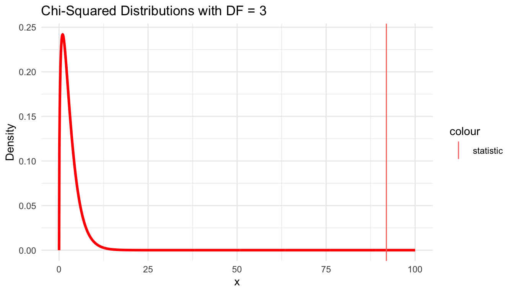
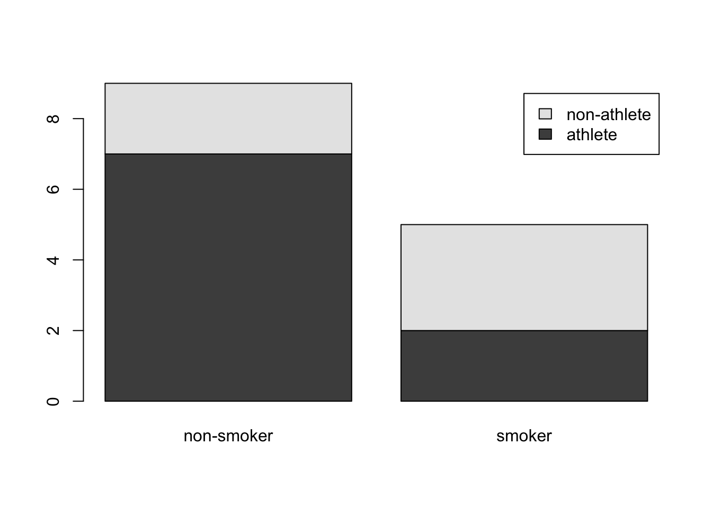

| Generation | Response | Count |
|---|---|---|
| Gen Z | Took action | 292 |
| Millenial | Took action | 885 |
| Gen X | Took action | 809 |
| Boomer & older | Took action | 1276 |
| Gen Z | Didn’t take action | 620 |
| Millenial | Didn’t take action | 2275 |
| Gen X | Didn’t take action | 2709 |
| Boomer & older | Didn’t take action | 4798 |
ST201 Data Analysis
Association between Categorical Variables (2)
Pearson’s Chi-squared test (recap)
- Pearson’s \(\chi^2\) statistic is used for measuring association between variables in a contingency table.
\(\chi^2\) test of association
- The \(\chi^2\) statistic is given as
\[\chi^2 = \sum_i \sum_j\frac{(O_{ij}-E_{ij})^2}{E_{ij}}\] We use the chi-squared test statistic and the chi-squared distribution to do a hypothesis test for independence for a two-way table.
Different chi-squared distributions correspond to different degrees of freedom.
For two way tables, the degrees of freedom is equal to: \(df\) = (number of rows minus 1) \(\times\) (number of columns minus 1).
Conditions:
Independent observations
Large samples: 5 expected counts in each cell
Pearson’s Chi-squared test (recap)
State the hypothesis - the null and the alternative.
H0: the variables are independent - there is no relationship between the two categorical variables. Knowing the value of one variable does not help to predict the value of the other variable.
H1: the variables are dependent - there is a relationship between the two categorical variables. Knowing the value of one variable helps to predict the value of the other variable.
Choose a significance level - common values are 0.05 (5%) or 0.01 (1%).
Get the test statistic - We can do this in R once we have data.
Make a decision - How does your p-value compare to the significance level?
Draw a conclusion - Is there independence or not?
Climate Example
Act on climate change. The table below summarizes results from a Research poll which asked respondents their generation and whether they have personally taken action to help address climate change within the last year.
Chi-squared test in R
# 1. Create a two-way contingency table
contingency_table <-
xtabs(Count ~ Generation + Response,
data = clim_data)
# 2. Do the chi-sq test
clim_chisq_test <- chisq.test(contingency_table)
contingency_table;clim_chisq_test Response
Generation Didn't take action Took action
Boomer & older 4798 1276
Gen X 2709 809
Gen Z 620 292
Millenial 2275 885
Pearson's Chi-squared test
data: contingency_table
X-squared = 91.924, df = 3, p-value < 2.2e-16. . .
Warning: Using `size` aesthetic for lines was deprecated in ggplot2 3.4.0.
ℹ Please use `linewidth` instead.
Mosaic Plot
A mosaic plot is a visualization technique suitable for contingency tables that resembles a standardized stacked bar plot with the benefit that we still see the relative group sizes of the primary variable as well.
. . .
Pearson’s residual
\(r_i = \frac{O_i - E_i}{\sqrt{E_i}}\)
- \(r_i\) is the Pearson residual for the i-th observation. \(O_i\) is the observed frequency for the i-th category. \(E_i\) is the expected frequency for the i-th category.
Reporting on results
. . .
Notes:
The result of the statistical test is preceded by the descriptive statistics. That is, I told the reader something about what the data look like before going on to do the test.
The description tells you what the null hypothesis being tested is.
A “stat block” is included given some specific information about the results of the test.
The results are interpreted.
Fisher’s exact test: independence test for a small sample
Fisher’s Exact Test is used when:
Comparing two categorical variables in a contingency table (usually 2x2).
Sample sizes are small, where other tests like the Chi-square test might not be appropriate.
- Fisher’s exact test is preferred when the expected values in one of the cells of the contingency table is less than 5.
Why use Fisher’s Exact Test?
It doesn’t rely on large sample approximations.
It provides an exact p-value
Fisher’s exact test
Fishers exact test is based upon calculating directly the probability of obtaining the observed data results (or results more extreme) if the null hypothesis is actually true, using all possible 2 × 2 tables that could have been observed, for the same row and column totals as the observed data.
Fisher’s test of association
For a given 2x2 table, the probability of obtaining the frequencies a, b, c and d is
\[P(Table) = \frac{{a+b \choose a}{c+d \choose c}}{{n \choose a+c}} = \frac{(a+b)!(c+d)!(a+c)!(b+d)!} {N!a!b!c!d!}\]
The p-value is the sum of the probabilities of all tables as extreme (or more extreme) than the observed one.
- This tells us the probability of getting the observed table (or more extreme) if the null hypothesis is true.
Fisher’s test
State the hypothesis - the null and the alternative.
H0: the variables are independent - there is no relationship between the two categorical variables. Knowing the value of one variable does not help to predict the value of the other variable.
H1: the variables are dependent - there is a relationship between the two categorical variables. Knowing the value of one variable helps to predict the value of the other variable.
Choose a significance level - common values are 0.05 (5%) or 0.01 (1%).
Get the test statistic - We can do this in R once we have data.
Make a decision - How does your p-value compare to the significance level?
Draw a conclusion - Is there independence or not?
Smoking Example
For our example, we want to determine whether there is a statistically significant association between smoking and being a professional athlete. Smoking can only be “yes” or “no” and being a professional athlete can only be “yes” or “no”. The two variables of interest are qualitative variables and we collected data on 14 persons.
| non-smoker | smoker | |
|---|---|---|
| athlete | 7 | 2 |
| non-athlete | 2 | 3 |

. . .
Expected Frequencies
Remember that the Fisher’s exact test is used when there is at least one cell in the contingency table with the expected frequencies below 5.
| non-smoker | smoker | |
|---|---|---|
| athlete | 5.785714 | 3.214286 |
| non-athlete | 3.214286 | 1.785714 |
Smoking example in R
Fisher’s test
Mosaic Plot
Reporting on results
. . .
Notes:
The result of the statistical test is preceded by the descriptive statistics. That is, I told the reader something about what the data look like before going on to do the test.
The description tells you what the null hypothesis being tested is.
A “stat block” is included given some specific information about the results of the test.
The results are interpreted.
. . .
Beware!! The headline might read:
“Study finds that being an Athlete reduces your chance of smoking!”
Class Example
| Cancer | No cancer | Total | |
|---|---|---|---|
| Coffee drinkers | 3 | 11 | 14 |
| Non-coffee drinkers | 1 | 15 | 16 |
| Total | 4 | 26 | 30 |
- Present the null and alternative hypotheses
- Calculate the exact probability in the observed contingency table
- Obtain other more extreme tables
- Obtain p-values of other tables
- Obtain p-value for the test
- Interpret